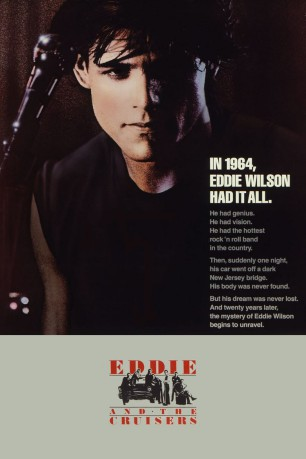

#11370 Eddie and the Cruisers
 
 IMDB-Wertung: 6.9 / 10
IMDB-Wertung: 6.9 / 10  Tomatometer: 38
Tomatometer: 38  Metascore: 51
Metascore: 51 
Anfang der 60er-Jahre kommt Musiker Eddie (Michael Paré) durch einen rätselhaften Unfall ums Leben. Die Leiche wird nie gefunden. Zwanzig Jahre später macht das Gerücht die Runde, Eddie lebe noch und bereite mit damals verschwundenen Tonbandaufnahmen sein Comeback vor.
Jahr: 1983
Dauer: 91 Minuten
FSK: 6
Land: USA Studio: Embassy PicturesTonspuren: DD2.0 - ,
Untertitel:
Auflösung: 1080p (1920x1080) Größe: 6717 MB
Genre: Drama, Musik, Mystery
Regisseur: Martin Davidson
Drehbuch: Martin Davidson, Arlene Davidson, P.F. Kluge
Soundtrack: John Cafferty
Darsteller:
 Tom Berenger als Frank Ridgeway
Tom Berenger als Frank Ridgeway Michael Paré als Eddie Wilson
Michael Paré als Eddie Wilson Joe Pantoliano als Doc Robbins
Joe Pantoliano als Doc Robbins- Matthew Laurance als Sal Amato
 Ellen Barkin als Maggie Foley
Ellen Barkin als Maggie Foley- David Wilson als
- John Stockwell als
- Robin Karfo als
- Louis D'Esposito als
- Michael Toland als
- Rob Holmes als
 Roberto Lombardi als
Roberto Lombardi als  Raymond Mamrak als
Raymond Mamrak als - Frank Patton III als
- Helen Schneider als Joann Carlino
- Michael 'Tunes' Antunes als Wendell Newton
- Kenny Vance als Lew Eisen
- Joe Cates als
- Barry Sand als
- Vebe Borge als
- Howard Johnson als
- Joey Balin als
- Bruce Brown als
- Rufus Harley als
- Bob Garrett als
- Joanne Collins als
- Jack Couch als
- John Hagy als
- Bob Kirsh als
- Lori Scolaro als
- Richard Southard als
- Christopher Stryker als
Datei: X:\2-Dilogie(A-F)\Eddie and the Cruisers\Eddie and the Cruisers (1983, FSK6, 1920x1080).mkv seit 24.06.2019
Festplatte: HD Collection-2(A-Z)-3(A-M)
 Alle Filme aus Gruppe '2-Dilogie(A-F)\Eddie and the Cruisers'
Alle Filme aus Gruppe '2-Dilogie(A-F)\Eddie and the Cruisers'
- Eddie and the Cruisers (der aktuelle Film)
- Eddie lebt